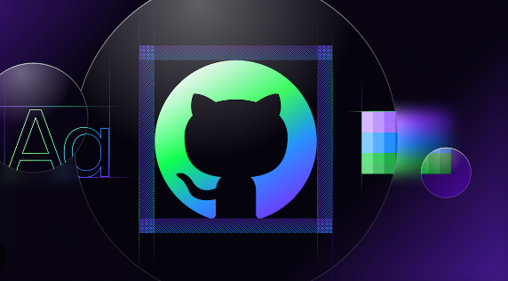

This is an automated project designed to assign labels to issues on GitHub based on predefined criteria.
This helps streamline the issue management process and improve organisation within a project.
It works by analysing the content of an issue, such as keywords, titles, and comments,
therefore applying appropriate labes.
It helps to maintain efficient issue tracking system on GitHub, which will make it easier for developers
to priorize and address various tasks

This research project investigates the use of various machine learning models to predict Bitcoin price. The study is motivated by the increasing popularity of Bitcoin and the need for accurate prediction tools in this volatile market. The project addresses challenges related to market dynamics, real-time data, and data quality.
The main objective of this project is to predict how a model could spread across different countries and regions and the goal of the task is to predict the spread of the virus in the next 7 days.
This project involves the application of Artificial intelligence to enhance the security of inancial institutions by identifying and preventing fraudulent activities. In this project, machine learning algorithms are employed to analyze vast amount of real time bank transaction data.
This project involves the use of natural language processing (NLP) technique to assess and categorize the customer review sentiments as positive, negative and neutral.